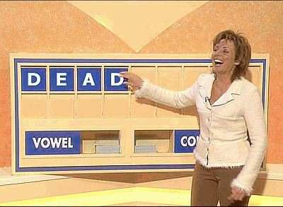

I have been drinking solidly since I heard of Richard's death. Although we never actually met I feel like a piece of my life has disappeared forever. We would meet in the afternoon, he looked so radiant whether in black and white or Ferguson colour. I have never liked Carol and I think she looks cheap. I hope they axe Countdown as a sign of respect.
#30 June 2005 | Comments (2)
Ingredients:
Bread (white or wheat)
butter or margarine
jam or jelly
Procedure:
Place 1 slice bread in toaster. Push lever down. When toast begins to rise, carefully remove from toaster. Lightly whip butter. Spread favorite toppings with broad, even knife strokes.
Makes 1 serving.
#30 June 2005 | Comments (4)
The other night I went to Noodle King, ordered some food, ate it, and walked off. I did not pay for it. I did not avoid payment on purpose but I have financially benefitted from my forgetfullness. If I had done it deliberately, I wonder if I would have been chased and asked to pay for my 49b and mixed fruit juice?
#27 June 2005 | Comments (3)
#26 June 2005 | Comments (3)
It's taken me twelve years, and a conversation down the pub last night, to realise that its all about the process. It doesn't matter what you do, in my case transmitting knowledge of sorts (you can pick and choose what you fancy) is about how you bring someone along with you. It's not the journey that matters, its how you get there and what you bring with you along the way. My journey took a steep turn for the better this week, but I know that it's the start of a whole new adventure. I am prepared.
#25 June 2005 | Comments (1)
East London design collective Unit Sicks are moving operations from Cheshire Street to Fournier Street.
I've been living in the back room at Cheshire Street for the past two weeks, the perfect opportunity to document the Shop with my cameraphone.
unit-sicks-shop_A4.jpg
762KB | Download
#24 June 2005 | Comments (1)
Blessed be the Lord everyday.
But just that little bit extra today.
Am I crazy or am I the only one who gets childhood flashbacks? I'm not talking about when you catch a whiff of perume or scent that takes you back, I'm talking about actual flashes from the past. They usually occur for me during the changing of the seasons.
I'm sure a lot of you feel it too. Its such a wonderful experience, verging on cathartic.
On that note, I'd like to hear some flashes you may have experienced recently. No need to give details of the actual flash, just the sensation it evoked in you.
Lets share these feelings.
#23 June 2005 | Comments (3)
London is a car that's been parked in the sun all day long and I am a dog with my tongue sticking through a crack in the window.
Today at lunch I saw a willow look-alike throwing the day's papers into a bin. An enraged shopkeeper ran onto the street cursing him.
'News! News! News!' the willow figure called, throwing the Mail back where it belongs. A Sun simmered on top of the bin next to a banana.
#22 June 2005 | Comments (1)
Today is super hot, I'm sitting in the office in my boxers. The peg board makes it smell like a sauna. I think I will go outside to heat my brain more. I wonder how hot a head can get before it bursts.
#22 June 2005 | Comments (2)
Right now, ambitious men and women in many walks of life are preparing for better futures with the help of Reakes spare-time training. Whether your goals are increased career opportunities or self-improvement you owe it to yourself to find out what Reakes home study can do for you. For more than two weeks Reakes has been a leader in home study. It has a staff of experienced instructors(s). That is why your training is in good hands; why a Reakes diploma is a respected credential.
The broadened opportunities resulting from Reakes home study may make a big difference in your future. One outstanding student reports "I received a £2000 yearly increase since enrolment with Reakes. My regret is that I didn't enrol before." Many letters like this come to Reakes.
#20 June 2005 | Comments (2)
{kind=link}